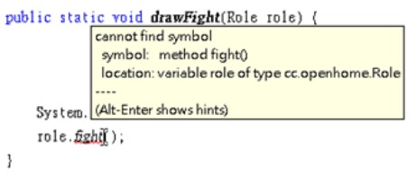
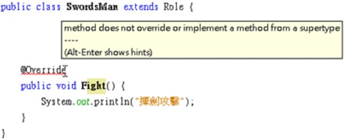
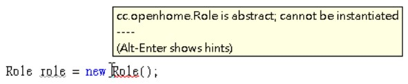
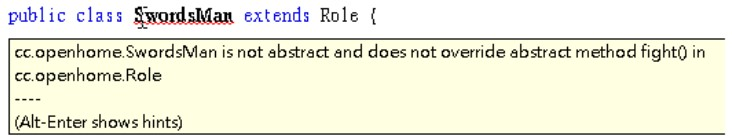

重新定義／abstract
June 6, 2022現在有個需求，請設計 static 方法，可以播放角色攻擊動畫，你也許會這麼想，學剛剛多型的寫法，設計個 drawFight 方法如何？

對 drawFight 方法而言，只知道傳進來的會是一種 Role 物件，所以編譯器也只能檢查你呼叫的方法，Role 是不是有定義，顯然地，Role 目前並沒有定義 fight 方法，因此編譯錯誤了。
重新定義
然而仔細觀察一下 SwordsMan 與 Magician 的 fight 方法，他們的方法簽署（method signature）都是：
public void fight()
也就是說，操作介面是相同的，只是方法實作內容不同，可以將 fight 方法提昇至 Role 類別中定義：
package cc.openhome;
public class Role {
...略
public void fight() {
// 子類別要重新定義 fight 的實際行為
}
}
在 Role 類別中定義了 fight 方法，由於實際上角色如何攻擊，只有子類別才知道，所以這邊的 fight 方法內容是空的，沒有任何程式碼實作。
SwordsMan 繼承 Role 之後，再對 fight 的實作進行定義：
package cc.openhome;
public class SwordsMan extends Role {
public void fight() {
System.out.println("揮劍攻擊");
}
}
在繼承父類別之後，定義與父類別中相同的方法簽署，但實作內容不同，這稱為重新定義（Override），因為對父類別中已定義的方法實作不滿意，所以你在子類別中重新定義實作。Magician 繼承 Role 之後，也重新定義了 fight 的行為：
package cc.openhome;
public class Magician extends Role {
public void fight() {
System.out.println("魔法攻擊");
}
...略
}
Role 現在定義了 fight 方法（雖然方法區塊中沒有程式碼實作），編譯器不會找不到 Role 的 fight 了，因此可以如下撰寫：
package cc.openhome;
public class RPG {
public static void main(String[] args) {
var swordsMan = new SwordsMan();
swordsMan.setName("Justin");
swordsMan.setLevel(1);
swordsMan.setBlood(200);
var magician = new Magician();
magician.setName("Monica");
magician.setLevel(1);
magician.setBlood(100);
drawFight(swordsMan);
drawFight(magician);
}
static void drawFight(Role role) {
System.out.print(role.getName());
role.fight();
}
}
在 fight 方法宣告了 Role 型態的參數，那方法中呼叫的，到底是 Role 中定義的 fight，還是個別子類別中定義的 fight 呢？如果傳入 fight 的是 SwordsMan，role 參數參考的就是 SwordsMan 實例，操作的就是 SwordsMan 上的方法定義。這就好比 role 牌子掛在 SwordsMan 實例身上，你要求有 role 牌子的物件攻擊，發動攻擊的物件就是 SwordsMan 實例。同樣地，如果傳入 fight 的是 Magician，role 參數參考的就是 Magician 實例，操作的就是 Magician 的方法定義。
範例最後的執行結果是：
Justin揮劍攻擊
Monica魔法攻擊
在重新定義父類別中某個方法時，子類別必須撰寫與父類別方法中相同的簽署，然而如果疏忽打錯字了：
public class SwordsMan extends Role {
public void Fight() {
System.out.println("揮劍攻擊");
}
}
以這邊的例子來說，父類別中定義的是 fight，但子類別中定義了 Fight，這就不是重新定義 fight 了，而是子類別新定義了一個 Fight 方法，這是合法的方法定義，編譯器並不會發出任何錯誤訊息，你只會在運行範例時，發現為什麼 SwordsMan 完全沒有攻擊。
如果你在子類別中某個方法前標註 @Override，表示要求編譯器檢查，該方法是不是真的重新定義了父類別中某個方法，如果不是的話，就會引發編譯錯誤。例如：

抽象方法／類別
Role 類別的定義裏 fight 方法區塊實際上沒有撰寫任何程式碼，雖然滿足了多型需求，但會引發的問題是，你沒有任何方式強迫或提示子類別一定要實作 fight 方法，只能口頭或在文件上告知，不過如果有人沒有傳達到、沒有看文件或文件看漏了呢？
如果某方法區塊中真的沒有任何程式碼實作，可以使用 abstract 標示該方法為抽象方法（Abstract method），該方法不用撰寫 {} 區塊，直接 ; 結束即可。例如：
package cc.openhome;
public abstract class Role {
...略
public abstract void fight();
}
類別中若有方法沒有實作，並且標示為 abstract，表示這個類別定義不完整，定義不完整的類別就不能用來生成實例，這就好比設計圖不完整，不能用來生產成品一樣。Java 規定內含抽象方法的類別，一定要在 class 前標示 abstract，如上例所示，這表示這是一個定義不完整的抽象類別（Abstract class）。如果嘗試用抽象類別建構實例，就會引發編譯錯誤：

子類別如果繼承抽象類別，對於抽象方法有兩種作法，一種作法是繼續標示該方法為 abstract（該子類別因此也是個抽象類別，必須在 class 前標示 abstract），另一個作法就是實作抽象方法。如果兩個作法都沒實施，就會引發編譯錯誤：

子類別可以重新定義父類別的方法，重新定義時可以重新標示具體方法為抽象 abstract，並令該方法沒有實作（當然該子類別就也得標上 abstract），如果又有類別繼承該子類別，就得實作該抽象方法。